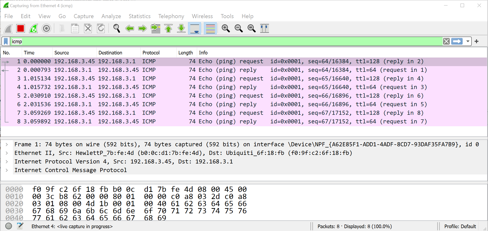
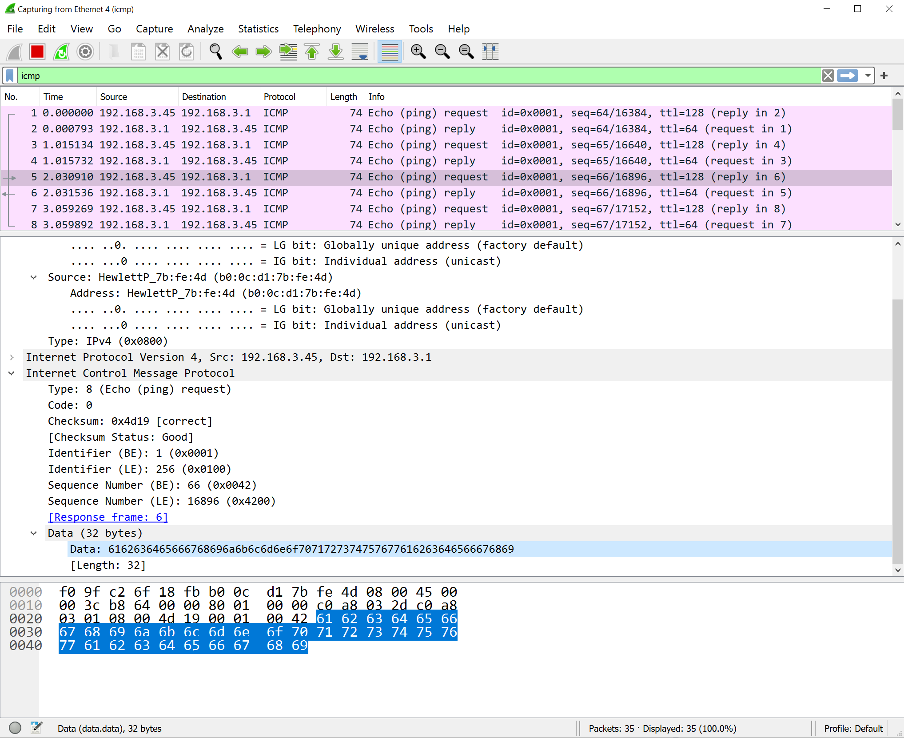

Note: do not only rely on the book for the answer. Consult LinkedIn Learning and Wikipedia.
(50) 1.What does "promiscuous mode" mean in relation to a Network Interface Card (NIC)? Briefly explain your answer.
Do Hands-On Project 3-2 Perform this in Somsen 301 or elsewhere with a fellow student or partner. Make sure you are both on the same network. Use your laptop or other computer to which you have administrative rights. If Professor Paulson is in Somsen 301 you can try pinging his computer, or the teaching station. Note that finding the Ethernet status box as described in step 3 will differ depending on your version of Windows. While pinging the other computer, record the following information, and enter it below.
(50) 2. Record high speed: (50) 3. Record average high speed reply time, ms: (50) 4. Record low speed: (50) 5. Record low speed reply time, ms: When done return your connection speed back to Autonegotiation!
Do Hands-On Project 3-3 to examine the details of an Ethernet frame, preferably in Somsen 301 during class. You will need to work with a partner, or ask Professor Paulson. You can also attempt this in another location, as long as you have permission. Make sure to use your WSU laptop because you have administrator access. Start WireShark, follow the instructions, and enter your answers to the questions in the spaces below.  Your values will be different.
(50) 6. In step 6 examine the Ethernet II frame fields and enter the value for the Destination MAC address below: (50) 7. In step 6 examine the Ethernet II frame fields and enter the value for the NIC manufacturer below: (100) 8. In step 8 copy the text/data portion of the ICMP packet and paste it in the space below:
(100) 9. Use the Snipping Tool to make a screen shot of your WireShark application, showing the ARP data capture packets and IP addresses, similar to the screen shot below. Note that your IP addresses will be different.  Save the screen shot as "Ex1" in your ' ' folder. You will be combining screen shots from several exercises at the end of this assignment, just as you did in Formative00-PDF File Creation.
The Packet Tracer Labs are accessible from MindTap in two ways:
No inital files are needed for this Packet Tracer lab. But you must save a copy of the file, 'VL3-1.pkt' you create in this lab to your folder.
Create a physical star topology network using a hub and three stations.
(50) 10. After completing step 10, use the Snipping Tool to make a screen shot of your completed Lab showing the hub and three devices. Refer to Figure 3-23 in the book. Save the screen shot as "Ex2" in your ' ' folder. You will be combining screen shots from several exercises at the end of this assignment, just as you did in Formative00-PDF File Creation.
Use the file VL3-1.pkt created in the previous Packet Tracer lab. You must save a copy of this file, and rename it 'VL3-2.pkt' to your folder.
Follow the instructions in Packet Tracer Lab 3-2 to view the details of a packet sent from one computer to another. Note in steps 8 and 9 the 'Capture then Forward' icon is in the 'Simulation Panel Play Controls' to the right of the Play button.
In step 3, Figure 3-24, when viewing the details about the packet in the OSI Model tab, answer the following questions.
(50) 11. How many OSI layers are involved in the packet transfer?: (50) 12. Which OSI layers are involved in the packet transer?:
In step 4, Figure 3-25, view the details about the Outbound PDU. (50) 13. Briefly explain why the packet must contains the MAC addresses of the sending and receiving computers:
In step 5, Figure 3-25, view the details about the IP protocol. (100) 14. Briefly explain why the packet also contains the IP addresses of the sending and receiving computers.
Use a web browser to verify that you have published your website to https://classes.winona.edu/... Check that your name, StarID, email, class, semester, section and all of your answers are correct and visible. From the menu choose File>Print... and using "Microsoft Print to PDF" save a copy of this assignment as a .pdf file in your ' ' folder.
(50) 15. Save your file 'WebPage.pdf' to the ' ' folder.
Create one .pdf (portable document format) file from the screen shots that you have taken by following these steps.
(50) 16. Save your file 'ScreenShots.pdf' to the ' ' folder.
Use PDFill to merge the WebPage.pdf file with the ScreenShots.pdf file, and save it as 'Summative03.pdf' in ' ' folder.
(50) 17. Upload your file 'Summative03.pdf' to the D2L 'Summative03' Assignment folder.
Use a browser to view your completed and published website at: https://classes.winona.edu/... Ensure that you have linked this assignment on your home page. Note that your screen shots do not have to be completed to perform this step.